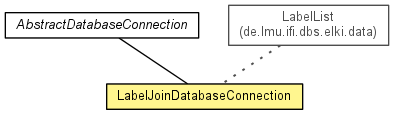

de.lmu.ifi.dbs.elki.datasource
Class LabelJoinDatabaseConnection
java.lang.Object
 de.lmu.ifi.dbs.elki.datasource.AbstractDatabaseConnection
de.lmu.ifi.dbs.elki.datasource.LabelJoinDatabaseConnection
de.lmu.ifi.dbs.elki.datasource.AbstractDatabaseConnection
de.lmu.ifi.dbs.elki.datasource.LabelJoinDatabaseConnection
- All Implemented Interfaces:
- DatabaseConnection, InspectionUtilFrequentlyScanned, Parameterizable
public class LabelJoinDatabaseConnection
- extends AbstractDatabaseConnection
- implements Parameterizable

Joins multiple data sources by their label
| Methods inherited from class java.lang.Object |
clone, equals, finalize, getClass, hashCode, notify, notifyAll, toString, wait, wait, wait |
logger
private static final Logging logger
- Logger
sources
protected final List<DatabaseConnection> sources
- The filters to invoke
LabelJoinDatabaseConnection
public LabelJoinDatabaseConnection(List<ObjectFilter> filters,
List<DatabaseConnection> sources)
- Constructor.
- Parameters:
filters - Filters to use.sources - Data sources to join.
loadData
public MultipleObjectsBundle loadData()
- Description copied from interface:
DatabaseConnection
- Returns the initial data for a database.
- Specified by:
loadData in interface DatabaseConnection
- Returns:
- a database object bundle
getLogger
protected Logging getLogger()
- Description copied from class:
AbstractDatabaseConnection
- Get the logger for this database connection.
- Specified by:
getLogger in class AbstractDatabaseConnection
- Returns:
- Logger